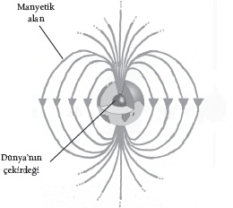
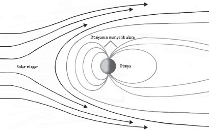

Yer değiştiren kutuplar, gezegenin çatırdamakta olan çekirdeği, Dünya üzerindeki hayata tehdit
Mars’ın uğradığı akıbetten kaçınabilir miyiz? Kızıl Gezegen’in manyetik kalkanı tekledi güneş de gezegenin atmosferinden bir patlamaya yol açtı; gezegen kurak, çorak bir arazi haline geldi. Dünya da aynı yöne doğru mu gidiyor?
Dünya’nın bilim insanlarınca manyetosfer olarak bilinen manyetik alanı, gezegende hayat başladığından bu yana biyosferin ayrılmaz bir parçası olmuştur. Bakteriler, bitkiler ve hayvanların, manyetik alanın yöneliminden etkilendiği bilinir. Manyetik alan olmazsa birçok kuş türü kelimenin tam anlamıyla kaybolurdu; manyetik alan kuşların kuzey yarıkürede sert geçen kışlardan kaçmasını mümkün kılan göç stratejilerinin köşetaşıdır.
İnsanlar manyetizmayı birçok hayvanla aynı biçimde bilinçli olarak hissedemezler; fakat yine de Dünya’nın manyetik alanından muazzam yararlar sağlarız. Öyle görünüyor ki manyetosfer, atmosferimizi yerinde tutmakla kalmaz; bizi güneşin yoğun ışınımından ve elektrik fırtınalarından da korur, aksi takdirde elektrikli aletlerimiz, uydularımız ve havayolu iletişimimiz felakete uğrardı. Dünya’nın manyetik alanı tekliyorsa, bunu ne kadar erken öğrenirsek o kadar iyidir.
Yer Değiştiren Kutuplar
Dünya’nın manyetik alanını açıkça kullanan ilk insan medeniyetinin hangisi olduğunu asla bilemeyiz. Kısa süre öncesine kadar, manyetik alanı ilk kullanan medeniyetin Çinliler olduğu düşünülüyordu; Çinliler binalarını feng shui ilkelerine uygun hale getirebilmek için “güneyi işaret eden balık” gibi manyetik mineraller kullanmışlardı. Gelgelelim bu uygulamayla ilgili güvenilir kanıtlar, uygulamanın başlangıcının MÖ 400’den öteye gidemediğini göstermiştir; bu da en eski manyetik aygıtın Olmeclerin yurdunda, Meksika’nın Veracruz kentinde bulunan mineral manyetit olduğu anlamına gelmektedir.
Yeni Dünya’nın ilk medeniyeti olduğu düşünülen Olmecler, MÖ 1000 ile 1400 yılları arasında varlık göstermişlerdir. 1970’lerin başında çıkarılan bu manyetit parçası, yere bırakıldığında çok az sürtünmeye yol açacak bir çubuk haline getirilmiş; bir ucunun ortasına da bir oyuk açılmıştır. Neresinden bakılırsa bakılsın bir pusula iğnesine benzemektedir.
Fizikçi John Carlson, Olmec manyetitin keşfini haber verdiğinde, Olmec halkının binalarını 8 derece kuzeybatı hizasında inşa ettiğine dikkat çekmişti. Carlson bunun “ilginç” olduğunu söylemişti. Fakat sonraki yüzyıllarda toplanan başka kanıtlarla birlikte alındığında, bu ilginç olmaktan öteye giden bir şeydi; Dünya’nın manyetik alanının sabit olmaktan uzak olduğunun kanıtıydı. Dünya’nın manyetik alanının şu sıralarda tekliyor olabileceğini düşünmemizin sebebi de budur.
Kuzeyi Göstermeyen Bir Pusula
Dünya’nın manyetik alanıyla ilgili modern ölçümler ancak iki yüzyıl önce başlamıştır; ama elimizde, alanların yer değiştirdiğine dair çok daha eski kanıtlar bulunmaktadır. Örneğin 12. yüzyılda inşa edilmiş yüzü aşkın Danimarka kilisesinin yönelimi incelendiğinde bugünkü manyetik doğu-batı çizgisinden 10 derece saptıkları görülür. Olmeclerin binalarında olduğu gibi, bu kiliseler inşa edildiğinde, pusulalar bugün olduğundan farklı bir yönü işaret ediyorlardı.
Dünya’nın manyetik alanına dair daha güvenilir bir değerlendirme 19. yüzyılın başında, Alexander von Humboldt’un Güney Atlantik’te seyahat ederken alan ölçümleri yapmasıyla başlamıştır. Von Humboldt manyetik alanın yoğunluğunun bu bölgede azaldığını keşfetmişti. 1804’te bulgularını Paris Enstitüsü’ne iletti; fakat kısa süre sonra karşı iddialar başgösterdi, mesele bir kargaşaya yol açtı. Nihayetinde von Humboldt meseleyi Alman matematikçi Carl Friedrich Gauss’a götürdü ve manyetik gözlemlerin bir atlasını hazırlamak için onun yardımını istedi. Bilimin farklı alanlarında önemli keşifler yapmış çok yetenekli bir insan olan Gauss zaten o sıralarda toprak manyetizmasını araştırıyordu ve yardım etmeye de dünden razıydı. 1840’a gelindiğinde manyetizma hakkında üç önemli makale kaleme almıştı (bunlardan biri Dünya’nın manyetik alanını tanımlamanın bir yolu üzerineydi) ve Dünya’nın manyetik alanı hariç bütün manyetik alanları dışarıda bırakacak seyyar bir manyetik gözlemevi inşa etmişti.
Gauss’un jeomanyetik atlası 1836’da yayınlandı. Dünya’nın manyetik alanıyla ilgili ölçümler, Gauss’un ilk çabalarından bu yana devam etmektedir; bugün elimizde 150 yıllık bir kayıt bulunuyor. Kilit önemdeki bulgulardan biri, manyetik Kuzey Kutbu’nun hareket etmekte olduğudur. Araştırmacılar bu duruma ilk kez 1831’de dikkat çekmiş; mesele sonra bir daha 1904’te gündeme getirilmiştir. Aradan geçen süre zarfında manyetik Kuzey Kutbu 50 km hareket etmiştir. 20. yüzyılda, manyetik kutup kuzeye doğru yılda yaklaşık 10 km hızla hareket etmiştir; ama bu hareketliliğin hızlandığı görülmektedir. Manyetik Kuzey Kutbu şimdilik yılda 40 km hareket etmektedir.
---
HAYVAN MANYETİZMASI
Bazı hayvanların manyetik alanları hissedebildiğine hiç şüphe yoktur. Hayvan krallığındaki göçlerin birçoğu hayvanların Dünya’nın manyetik alanına göre yol almalarını gerektirir. Sini kaplumbağalarının (Caretta caretta) yaklaşık 13.000 km’lik göçü, kral kelebeklerinin Amerika’daki büyük yolculuğu, balık kartallarının kıtaları aşması, bunların hepsi de manyetik alanların hissedilmesini gerektirir. Onların bunu nasıl yaptıkları tam olarak kesinlik kazanmamıştır, ama ipuçlarını topluyoruz. Birçok hayvan türünün dokuları –kurbağalar, arılar, sarı yüzgeçli somon ve bakteriler örneğin– bir dış manyetik alanla uyum sağlayan manyetit minerali içerir.
Dolichonyx oryzivorus (bobolink) gibi göçmen kuşların beyin hücrelerinde manyetit vardır. Kuşların “manyetik görüşe” de sahip olduğu gösterilmiştir. Göçmen bahçe ötleğeninin görsel nöronlarında, zayıf manyetik alanlara duyarlı olduğu görülen kriptokrom proteinleri bulunmaktadır. Farklı yönelimlere maruz kaldıklarında bu proteinler farklı kimyasal kombinasyonlar üretir. Öyle görünüyor ki akşam saatlerindeki “mavi” ışık bu proteinlerin harekete geçip bu kimyasalları üretmesini sağlamakta özellikle maharetlidir; günün bu saatlerinde kuşlar yönelimlerini ayarlıyor olur.
Manyetik alanları hissedenler yalnızca göçmen hayvanlar değildir; ineklerin de manyetik olarak duyarlı olduğu düşünülmektedir. Otlamakta olan süt ve besi sığırlarının altı farklı kıtadan alınmış uydu görüntüleri kuzey-güney hattında 5 derecelik bir bölgeye yönelerek durduklarını göstermektedir. Bu verilerle ilgili bazı soru işaretleri vardır; bu durumun o sırada baskın rüzgârlardan kaynaklanabileceği de düşünülmektedir. Yine de bu ilginç bir gözlemdir ve veriler coğrafi kuzey ile manyetik kuzey arasındaki çeşitli değişimlerle de bağlantılı görünmektedir. Güçlü bir manyetik alanın bulunduğu Oregon’da, inekler coğrafi kuzeye 17,5 derecelik bir açıyla, manyetik kuzeye doğru durmaktadır. Geyik sürülerinin de aynı şeyi yaptığı gözlenmiştir. Bu kadar çok hayvan bu hisse sahipse, insanlar açısından durum nedir?
Manyetik alanları bilinçli olarak hissettiğimize dair kanıtlar yoktur; fakat insanların sağlık durumlarını manyetik alanlarla ilişkilendiren araştırmalar vardır. Rusya, Avustralya ve Güney Afrika’da yapılan araştırmalarda jeomanyetik faaliyetler ile intihar ve depresyon oranlarının artması arasında bağlantılar olduğu görülmüştür. Bunun kökenindeki sebep gizemini korumaktadır; fakat araştırmacılar jeomanyetik değişimlerin melatonin üretimini ve 24 saatlik biyokimyasal, psikolojik ve davranışsal ritimleri etkiliyor olabileceğini ileri sürmüşlerdir; bunların her ikisi de ruh hali bozukluklarıyla ilişkilendirilmiştir.
---
Tek değişiklik bu değildir: Kayıtlar, orta enlemlerde pusula iğnelerinin her on yılda bir 1 derece kaydığını göstermektedir. Güney Atlantik’te de gerçekten bir sorun vardır: Uydu ölçümleri Atlantik Okyanusu’nun altında, Güney Afrika’nın batısında manyetik alan hatlarının birleşiyormuş gibi göründüğünü, manyetik bir kutup oluşturduğunu göstermektedir. Bu “Güney Atlantik anormalliği” kendi tersine çevrilmiş manyetik alan hatlarını göstermektedir; bu hatlar artık Güney Amerika’nın büyük bölümünü kaplamakta ve Dünya’nın manyetik alanıyla ilgili genel görüşümüzü bulanıklaştırmaktadır. Sonra bir de manyetik alanın genel olarak zayıflaması meselesi vardır. Bir bütün olarak ele alındığında, Dünya’nın manyetik alanı Gauss’un ölçümleri başladığından bu yana gücünün yüzde 10’unu kaybetmiştir. Bunun gelecek açısından ne anlama geldiğini anlamak için bilim insanları manyetik alanın kökenlerini ortaya çıkarmaya çalışmışlardır.
Çalkalanan Küreler
Dünya’nın bir Kuzey bir de Güney Kutbu olduğu gerçeği, bizi, manyetik alanın gezegenin derinliklerine gömülmüş olan bir mıknatıs çubuğu gibi bir şeyden doğduğunu düşünmeye itebilir. Maalesef işler bu kadar basit değildir. Dünya’nın manyetik alanı, gezegenin kalbinin derinliklerine gömülmüş olan bir erimiş demir ve nikel küresinden kaynaklanmaktadır. Dünya’nın iç çekirdeği 1250 kilometre çapında sert bir demir toptur. Bu top son derece sıcaktır, birkaç bin derece kadar; gezegenin geri kalanının ağırlığından ötürü üstüne binen basınç, bu topun erimesini engellemektedir.
İç çekirdeğin çevresinde manyetik alanı yaratan erimiş metal vardır. İç çekirdekten çıkan ısı bu sıvının içinde dolanır ve sıcak sıvı metali yer kabuğunun altındaki tabakaya, mantoya doğru iten konveksiyon akımları yaratır. Sıcak sıvı metal yükseldikçe soğur ve sonra geri iner. Bu metalik iletkenin hareketi elektrik yaratır, elektriğe her zaman bir manyetik alan eşlik eder. Bu bileşim Dünya’nın manyetik alanını ayakta tutan, kendi kendisini devam ettiren bir “jeodinamo” yaratır.
Bu jeodinamo son derece karmaşık bir manyetik alana yol açar. Dünya kendi ekseni etrafında dönerken manyetik alan hatları birbirine girer, sıvı dış çekirdek içinde yeni akımlar oluşur. Bu durum yeni manyetik alan hatlarının oluşumunu beraberinde getirir, kimi zaman yeni bir manyetik alan çekirdeğin içinde büyüyebilir. Genellikle bu alan halihazırda mevcut alana eklenecektir; fakat yönelimi baskın olan alana göre değiştirilirse Dünya’nın genel manyetizmasından sapabilir.
Güney Atlantik anormalliğiyle ilgili olarak yaşanmakta olan bu olabilir; Dünya’nın manyetik alanının görünürdeki zayıflamasının sebebi de bu olabilir. Gelgelelim araştırmacılar emin olamamaktadırlar; çünkü böyle muazzam bir jeodinamonun yarattığı manyetik alanın dinamikleri, sırlarını matematiksel modellere teslim etmeyecek kadar karmaşıktır. Hayal kırıklığına uğramış jeodinamo araştırmacıları matematiksel modellerini, gerçek dünyaya uygun jeodinamolar yaratarak tamamlamaktadırlar. Genelde bu, son derece tehlikeli cihazların kullanılmasını gerektirir. Laboratuarınızda erimiş, dönen metal istiyorsanız birkaç bin derecede eriyen bir metal kullanamazsınız. En uygun aday 100 derecenin biraz altında eriyen sodyumdur.
Bunu söylemişken, sodyumun da kendine özgü tehlikeleri olduğunu belirtelim. Örneğin su ve havayla temas etmesi halinde şiddetli bir patlamayla yanabilir. Yine de araştırmacılar, ayaklarımızın altında olup bitenleri simüle etmek için erimiş sodyum toplarını döndürmeyi başarmışlardır. Varılan sonuçlar etkileyici olmuştur: Kendi kendisini devam ettiren manyetik alanlar gerçekten de oluşur ve Dünya’nın jeodinamosunun gösterdiği karmaşık davranış biçimini gösterirler. Hatta zaman zaman Kuzey ve Güney kutupları yer değiştirdiğinde manyetik alanlar “tersine dönmeler” gösterir. Bu süreç içinde manyetik alan kaybolur ve çok daha karmaşık bir hal alır; sonra yine büyür, ama kutupsallığı tersine dönmüştür.
Bir süre boyunca, bir tersine dönme sırasında açıkça tanımlanmış bir manyetik alan olmaz. Peki, böyle bir şey Dünya’nın manyetik alanına olursa feci sonuçlara yol açması olası mıdır? Maalesef, bu simülasyonların bile Dünya’nın manyetik alanıyla ilgili tahminler yürütmemizi sağlayacak kadar doğru olduğu görülmemiştir. Öyle görünüyor ki yapabileceğimiz en iyi şey gezegenin kaya kabuğunun içinde donmuş kanıtlara bakmak ve bulgularımızı çıkarmaya çalışmaktır.

DÜNYANIN MANYETİK ALANI
NEREDEN İLERİ GELİYOR?
Kayalara Yazılmış
Okyanusların ortasındaki yamaçlarda tektonik plakalar arasındaki açıklıklarda, volkanlardan akan erimiş kayanın içinde manyetik kristaller –küçük manyetit zerrecikleri örneğin– serbestçe hareket ederler; kendilerini Dünya’nın manyetik alanının yönüne yönelteceklerdir. Bu kaya soğuduğunda bu yönelim donar; manyetik alanı, kendi döneminin manyetik kuzeyini gösteren bir kaya oluşur. Araştırmacılar, kayalara tarih vererek ve manyetik yönelimlerini not alarak “kuzey” yönünün 1000 yıl içinde nasıl değişmiş olduğunun bir tablosunu çizebilirler. Manyetik alanda bir aksaklık olduğuna dair ilk kanıtı da böyle elde etmişizdir. 1904’te Güney Fransa’da Massif Central Dağları’nda yapılan jeomanyetik araştırmalar kayalardaki manyetik kristallerin yöneliminin bugün olması gerekene kıyasla ciddi bir değişiklik gösterdiğini ortaya koymuştu. 1920’lerde dünyanın her yerinde benzer gözlemler yapılıyordu, paleomanyetizma alanı böylece doğdu.
Elimizde artık geçmiş 20 milyon yıl içinde, Dünya’nın manyetik alanının 60 kereden fazla çöküp tersine döndüğünü gösteren kanıtlar bulunmaktadır. Bu tersine dönmeler yaklaşık her 500.000 yılda bir meydana gelmiştir, tamamlanmaları da binlerce yılı alabilir. Gelgelelim bu öyle saat gibi tıkır tıkır işleyen bir fenomen değildir. Kimi zaman, dinozorların devrinde olduğu gibi, milyonlarca yıl boyunca hiçbir değişiklik olmaz. 780.000 yıldır bir tersine dönme görmedik henüz. Peki, bu bir yer değiştirmeyle karşı karşıya olduğumuz anlamına mı geliyor? Dünya’nın manyetik alanının telaşlandırıcı derecede hızlı bir biçimde silinip gitmesinin sebebi bu mudur?
---
GÜNEŞ SALDIRINCA
Gezegenimizin manyetik alanı, güneş “solar fırtına” diye bilinen şeyi yaratırsa gerçekten de kendi başının çaresine bakmak zorunda kalır. Bu durum sıklıkla güneş lekelerinin belirmesine denk düşer; güneş lekeleri güneşin yüzeyinin altında son derece yoğun manyetik alanlar bulunduğunun işaretidir. Parçacıkların kaotik hareketi bu manyetik alanların ortalıkta kıvrıldığı, bükülüp döndüğü, zaman zaman da büyük bir plazma topu fırlatan bir kamçı ucu yarattığı anlamına gelmektedir. Bu kamçının ucu Dünya’ya doğru yöneldiğinde, yoğun manyetizması, bizim manyetik alanımız olan manyetosferle etkileşime girer.
İki manyetik alanın birbirine göre yönelimine bağlı olarak iki şey olabilir. Alanlar aynı hizadalarsa birbirlerinin üzerinden kayarlar. En kötü senaryoya göre, özellikle enerjik bir plazma topunun alanı Dünya’nın alanına ters olursa işler daha dramatik bir hal alabilir: Plazma topunun manyetik alanı Dünya’nın manyetik alanında bir delik açar ve parçacıklar buraya dolar. Sonuç yıkıcı olabilir; uydular hasar görür, Dünya’daki prizler için bu bir felaket olur. Örneğin Mart 1989’da böyle bir güneş fırtınası, Kanada’nın Quebec eyaletinin büyük bir bölümünü karartmış, 6 milyon insanı 9 saat boyunca elektriksiz bırakmıştır.
---
Kaptan Cook’un Güney Denizleri’ne yaptığı yolculuklarda tuttuğu seyir defterleri sayesinde halihazırdaki teklemenin nispeten kısa bir süre önce başladığını biliyoruz. Elimizde denizcilere ait, 1590’lara kadar uzanan seyir defterleri bulunuyor; bu seyir defterlerinde başka birçok şeyin yanı sıra Dünya’nın manyetik alanının yönü ve manyetik alan hatlarının Dünya’ya hangi açıyla girdiği kaydedilmiştir. Yararlı bir denizcilik numarası olmuştur bu; denizcilerin hayatı birçok bakımdan buna dayanıyordu. Gauss 1840’ta manyetik alanın gücünü ölçmeye başladığından beri, bu güçte bir gerileme olduğunu kaydetmiş bulunuyoruz; fakat gemilerin seyir defterlerine göre 1590’daki değerle Gauss’un ölçtüğü manyetik alan gücü arasında bir değişim görünmemektedir.
Elbette ki elimizde kesin bir sonuç çıkarmamızı sağlayabilecek yeterince veri bulunmuyor olabilir: Örneğin “Güney Amerika anormalliği” bizi yoldan çıkarıyor olabilir. Peki, bu tuhaf ölçümler ve keşifler kaygılanmamıza mı neden olmalı? Dünya’nın manyetik alanının gezegende hayatın gelişiminde oynadığı –ve oynamayı sürdürdüğü– rol düşünüldüğünde cevabımızın “evet” olması gerekiyor.
Büyük Koruyucu
Evimiz dediğimiz mavi-yeşil gezegen güneşten yaklaşık 150 milyon km uzaktadır. Bizler, iklim ne çok sıcak ne de çok soğuk olduğu için hayatın belli bölgelerde yeşerebileceği “Şanslı Bölge”de yer alıyoruz. Fakat güneş ısıdan fazlasını üretir. Güneşin yüzeyi çalkantılı bir plazma kitlesidir; elektrik yüklü, yüksek enerjili parçacıklardan oluşan bir gazdır. Güneş sürekli bu parçacıkları kaybetmektedir; parçacıklar “solar rüzgâr” olup uzayda yol almaktadır. Bizim manyetik alanımız Dünya’nın çevresinde bulunan bu parçacıkların birçoğunu yönlendirir. Şurası önemlidir: Bu parçacıkların ancak küçük bir bölümü Dünya’nın yüzeyine ulaşır.
Solar rüzgârdan parçacıklar, yüksek irtifada atmosfere çarptığında, bazıları enerji yüklenmiş bir parçacıklar dizisi meydana getirir. Bu enerji, aurora borealis, yani Kuzey Işıkları’nın florasan ışıltısı halinde serbest bırakılır. Gerçi bu parçacıkların bazıları Dünya’nın yüzeyine radyasyon olarak ulaşır. Solar rüzgârdan gelen bu radyasyon bazı bakımlardan pozitif bir kuvvettir. Örneğin Dünya üzerinde hayatın evriminin bir bölümünü yönlendirmekten sorumlu olabilir. Bu radyasyon DNA’ya zarar verebilir; bu durum karadaki hayatın genetiğinde mutasyonlar olmasını zorunlu kılar ve evrim sürecini kolaylaştırır.
Gelgelelim radyasyon aynı zamanda bir tehlikedir. Çok yoğun olursa DNA’daki mutasyonlar kısırlığa, kansere, hatta bazı türlerin nesillerinin tükenmesine yol açabilir. Bu radyasyonun Dünya üzerinden hayatı silmemiş olması büyük ölçüde gezegenimizin manyetik alanının solar rüzgârın büyük bölümünü yolundan çeviriyor olmasından kaynaklanmaktadır. Peki, gezegenimizin manyetik alanı tekliyorsa ne olacak?

DÜNYANIN MANYETİK KALKANI
Gezegenin Manyetik Alanı Tekliyorsa…
Gezegenimizin manyetik alanının en azından 3,2 milyar yıl önce oluştuğunu biliyoruz. Bilinen ilk hayat biçimleri 3,5 milyon yıl önce varlık göstermişti. Görünüşe bakılırsa bunun anlamı açıktır: Hayat bir manyetik alan içinde gelişmiştir ve bir manyetik alana ihtiyaç duyabilir. Ay’ın da Mars’ın da 4 milyar yıl önce manyetik alanları vardı; ama artık ikisinin de yok, ikisi de bildiğimiz kadarıyla hayat barındırmıyorlar.
Fizikçilerin bunun sebebiyle ilgili en iyi tahminine göre, Ay’ın ve Mars’ın boyutlarının küçük olması çabuk soğudukları; bu yüzden sıvı çekirdeğin fokurdar halde tutulması için gerekli ısıyı kaybettikleri anlamına gelir. Dünya’nın daha büyük olması, gezegenin çekirdeğindeki ısının korunmasını sağlar, tektonik plakalar da mantoyu çekirdeğe kıyasla serin tutar. Bu ısı farklılığı konveksiyon akımlarını güçlü tutar, demir bakımından zengin erimiş kayayı karıştırır ve manyetik alanımızı yerinde tutar.
İşte hayatla bir başka bağlantı daha: Dünya’nın manyetik alanı atmosferimizin devam etmesini sağlar. Manyetik alanın solar rüzgârı yolundan saptırması, atmosferin solar rüzgâr parçacıklarına hedef olmadığı anlamına gelir. Mars’ın geride kalan azıcık iyonosferine ait haritalar, Mars kayalarının manyetizmalarını koruduğu noktaların iyonosferin de en kalın olduğu noktalar olduğunu göstermektedir. Öyle görünüyor ki manyetik alanınızı kaybederseniz, atmosfer de onunla birlikte gitmektedir. Bu yüzden Dünya’nın manyetosferi sadece bizi radyasyondan korumakla kalmaz. Aynı zamanda atmosferimizin oluşup gelişmesini mümkün kılar, bize soluyacak oksijen verir. Peki, soluduğumuz havayı mı kaybetmek üzereyiz?
Kesinlikle hayır diyebiliriz. Tersine dönme muhtemelen gerçekleşmektedir; fakat bütün deneylerimiz ve gözlemlerimiz manyetik bir ters dönmenin de en az birkaç bin yıl alacağını göstermektedir. Bu süre zarfında, Dünya’nın manyetik alanı zayıflayacak ve çok çok daha karmaşık bir hal alacak; fakat atmosferimizi yerinde tutacak kadar güçlü olacaktır. Başka açılardan da bir felaket olmayacaktır.
O sıralarda Dünya üzerinde yaşayan insanlar neredeyse kesinlikle çok daha fazla solar radyasyon alma riskiyle karşı karşıya olacaklardır. Fakat bunun gerçekten sorun olup olmayacağını henüz hiç kimse bilmiyor. DNA hasarı yüzünden kitlesel bir tükenme söz konusu olabilir; fakat bu tür takvimler üzerinde etkili olan başka o kadar çok etken vardır ki her şey mümkün olabilir. Son ters dönmede atalarımızın nesli tükenmemiştir, hem o zamana dek bizler kendi suni radyasyon kalkanımızı yaratacak teknolojiyi geliştirebiliriz. Dünya’nın doğal kalkanı pekâlâ tekliyor olabilir; fakat bu sefer bunun sonuçlarıyla yüz yüze gelmeye hazırız, niyetliyiz ve muktediriz.